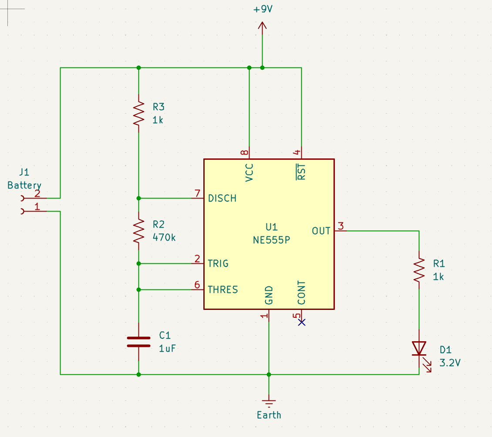
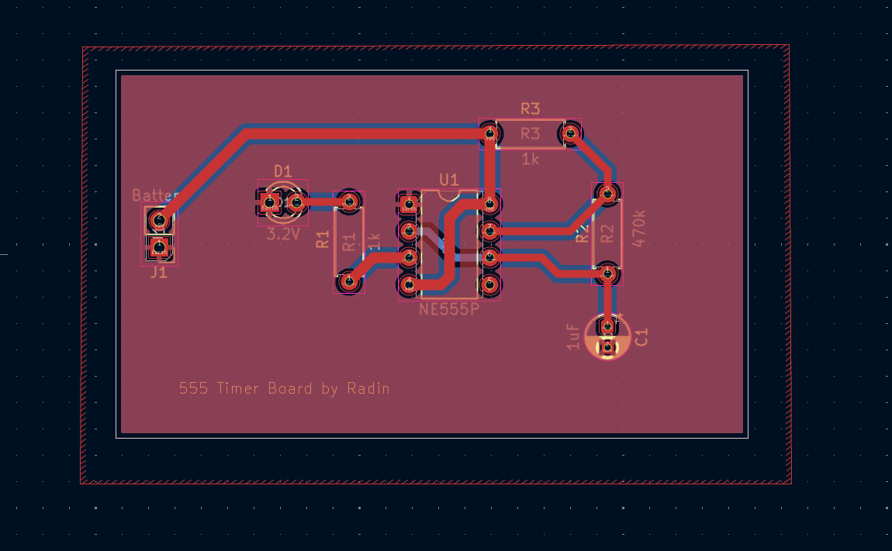
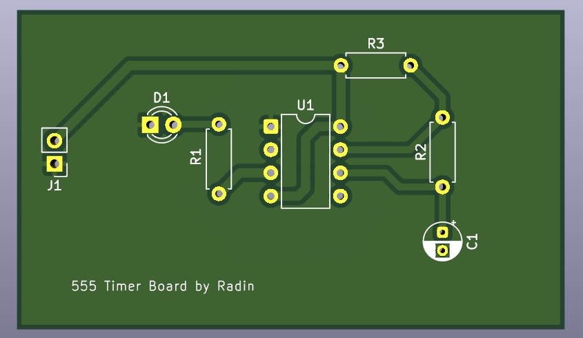

PCB Design · Analog Electronics
Overview
This PCB is a simple 555 timer circuit configured in astable mode, designed to blink an LED. It is powered by a 9V battery and includes a single LED with a current-limiting resistor.
This was a project done under IEEE at UC Irvine. The PCB was designed using KiCad. An LTspice simulation file is included for testing and verification.
01 — Components
| Component | Value | Description |
|---|---|---|
| U1 | NE555 | Timer IC |
| C1 | 1µF | Timing capacitor (TRIG/THRES to GND) |
| R1 | 1kΩ | LED current-limiting resistor |
| R2 | 470kΩ | Discharge to TRIG/THRES timing resistor |
| R3 | 1kΩ | Discharge to VCC timing resistor |
| LED | — | Indicator LED |
| BAT | 9V | Battery power supply |
02 — Wiring & Connections
| Pin | Connection |
|---|---|
| VCC | Positive battery terminal (+9V) |
| GND | Negative battery terminal |
| DISCH | Connected through R3 (1kΩ) to VCC node |
| TRIG | Connected to R2 (470kΩ) from DISCH and 1µF capacitor to GND |
| THRES | Connected to TRIG and 1µF capacitor to GND |
| OUT | LED in series with R1 (1kΩ) to GND |
| RESET | Tied to VCC node (battery positive) |
| CV | Disconnected |
Note: The battery connector is where you connect the 9V battery; observe LED polarity.
03 — Usage
04 — Timing Calculations
For a 555 timer in astable mode:
T_high = 0.693 × (R2 + R3) × C T_low = 0.693 × R2 × C T_total = T_high + T_low = 0.693 × (R3 + 2×R2) × C f = 1 / T_total Duty cycle = T_high / T_total
R2 = 470kΩ, R3 = 1kΩ, C = 1µF
T_total = 0.693 × (R3 + 2×R2) × C T_total = 0.693 × (1,000 + 2×470,000) × 0.000001 T_total ≈ 0.651 seconds
f = 1 / T_total ≈ 1 / 0.651 ≈ 1.54 Hz
T_high = 0.693 × (R2 + R3) × C T_high = 0.693 × (470,000 + 1,000) × 0.000001 ≈ 0.326 s Duty cycle ≈ T_high / T_total ≈ 0.326 / 0.651 ≈ 50%
Note: R1 (LED resistor) does not affect timing.
05 — Simulation
Design Files


